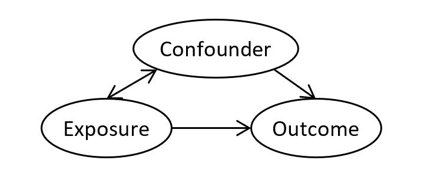

Confounding
Topic: Review of the concept, and strategies to address, confounding. A confounding variable distorts the estimated effect of another variable on the outcome.
Introduction
The observed relationship of a primary variable of interested (referred to as the “exposure”; e.g. treatment group), and the outcome may be biased because of random error/chance or systematic errors.
Systematic error includes: - Selection bias - bias from the procedures used to select people into the study or retain them in the analysis - Information bias - bias from a flaw in measuring exposure, outcome, or covariates - Confounding - discussed below
What is Confounding?
A confounding variable (i.e. confounder) is a variable that distorts the observed relationship between the exposure and outcome. A confounder is associated with the exposure, and causally associated with the outcome. For example, if smoking effects the outcome and, if smoking is more prevalent in one group, the estimated effect of group on outcome will be biased.

There is nothing intrinsic about confounders - whether a variable is a confounder depends on the other variables in the model, the outcome of interest, and the aim of the study/analysis. To identify confounders, researchers must rely on theoretical knowledge of the subject area and/or data driven methods (see ‘Multivariable adjustment’ below).
Confounding may lead to an overestimation of the true strength of the association between exposure and outcome, an underestimation, or even an inversion of the direction of the association. Confounding can be controlled/addressed at the design stage and/or analysis stage of a study.
Control of Confounding: Design Stage
Randomization
Randomization breaks any link/association between exposure and confounder. This is the only method that controls for measured and unmeasured confounding factors.
Limitations: may be unethical to randomize to treatment; confounding may still be introduced when there is high attrition (drop out); covariates may remain imbalanced if sample size is small.
Restriction
This method involves including only individuals with a certain exposure (e.g. only include non-smokers in study). Confounding cannot occur if distribution of confounder does not vary across the exposure.
Advantage: straightforward, convenient, inexpensive.
Limitations: reduced external validity, can only restrict on known confounders, unable to evaluate effect from factors that have been restricted (i.e. can’t evaluate impact of smoking).
Matching
This method involves selecting a comparison group that is forced to resemble the group of interest with respect to the distribution of one or more potential confounders. The method ensures that the distribution of confounder is similar for the different exposure groups.
Limitations: may be difficult to implement; effect of confounder cannot be estimated; increases complexity of analyses; can lead to overmatching (introduce bias)
Control of Confounding: Analysis Stage
To control for confounding in the analyses, we have to collect data on the confounding variable (i.e. cannot adjustment for unmeasured factors).
Stratification
This method involves, separating individuals into groups (strata) based on the value of the confounder, then evaluating the relationship between exposure and outcome in each strata. For example, evaluate the relationship of exposure and outcome among smokers, and among non-smokers separately. Within each strata, the confounder cannot confound because it does not vary. This method works best when there are few strata and few confounders to be controlled.
Limitations: can result in sparse data.
Multivariable adjustment
This method involves using multivariable regression models to control for confounders. It can handle multiple confounders, and confounders that have many strata or are continuous. The presence of a confounder is suggested when the effect of the exposure on the outcome changes by >10% when the confounder is included in the model.
Note: statistical significance (whether the confounder is significant in the regression model) should not be used to determine the presence/absence of a confounder. Statistically non-significant confounder (e.g. p >.05) may have an important confounding effect. Confounding does not depend on statistical significance; the amount of confounding is a result of the strength of the two associations between confounder and both exposure and outcome.
Caveats to Consider
When there is excess correlation between confounder and exposure (or confounder and outcome), it becomes difficult, if not impossible, to control for confounding (problem known as collinearity). For example, consider the exposure of “air pollution” and the suspected confounder of “area of residence”, it would be difficult to control for the effect of residence when assessing the effect of air pollution on respiratory symptoms.
It is only possible to adjust for a confounder when levels of the confounder and those of the exposure overlap. For example, it would be impossible to adjust for age if there were no overlap in ages between exposed and unexposed individuals.
Residual confounding occurs when either the categories of the confounder controlled for are too broad, resulting in an imperfect adjustment, or when some confounding variables remain unaccounted for.
References and Further Readings
Rothman, Kenneth J. Epidemiology: an introduction. Oxford University Press, 2012.